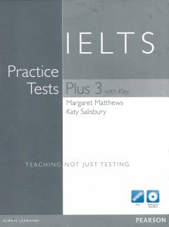

IPIELTS imtihoniga tayyorlanish uchun mo'ljallangan amaliy testlar to'plami.
Ushbu kitob IELTS imtihoniga tayyorlanayotgan talabalar uchun mo'ljallangan amaliy testlar to'plamidir. Unda imtihonning barcha qismlari bo'yicha namunaviy savollar va ularni bajarish uchun foydali tavsiyalar keltirilgan.